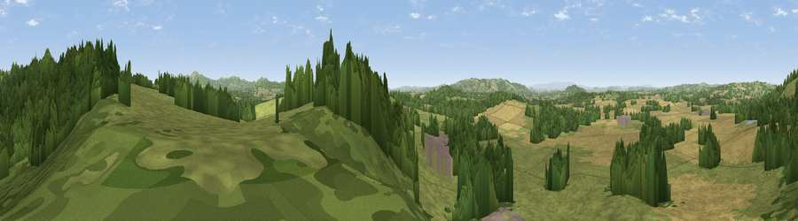

Viewpoint near Fromes Hill
#11964 in England · top 30% of its area beats it · near Fromes HillThe view, rendered

A 360° render of this exact spot computed from the terrain model, tree cover and land cover — summer colours, afternoon light, calibrated against photographs of famous viewpoints. Real trees, hedges and buildings will differ in detail.
The panorama
Grey silhouette: terrain skyline in each direction (720 bearings, Earth curvature and refraction included). Dashed green: skyline with trees (+15 m) and buildings (+8 m) as obstacles. Blue strip: how far the ground is visible on each bearing.
Where the view opens
Wedge length = distance to the farthest visible ground on that bearing (vegetation-aware). Rings at 10, 25 and 50 km.
What fills the view
42% grassland · 34% woodland · 22% cropland · 2% built-up
Angular shares of the visible panorama (visual magnitude), not map area. Landscape diversity 0.50 (0–1 Shannon).
Key numbers
More beautiful places nearby
The staircase of upgrades: each row has a higher view potential than everything closer. Driving times are estimates from straight-line distance, calibrated against real road routing — check an actual route before setting out.
| Place | Direction | Drive | Score |
|---|---|---|---|
| Viewpoint near Bosbury | SSE · 1 km | ~2 min | 62.7 |
| Viewpoint near Fromes Hill | N · 1 km | ~4 min | 67.3 |
| Viewpoint near Bishop's Frome | NNE · 4 km | ~9 min | 69.0 |
| Viewpoint near Longley Green | NE · 6 km | ~13 min | 69.3 |
| Viewpoint near Coddington | ESE · 6 km | ~13 min | 76.4 |
| Viewpoint near Tarrington | SW · 8 km | ~16 min | 81.4 |
| Seagar Hill | SW · 8 km | ~16 min | 82.1 |
| Worcestershire Beacon | E · 10 km | ~19 min | 87.1 |
52.10121, -2.48428 · source: screening · position refined by local search. Computed location — check access rights before visiting.